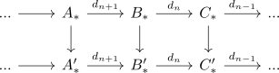
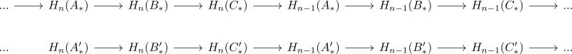
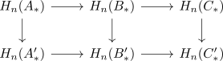
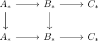

naturality of the boundary map for the long exact sequence
Proposition
Let $\mathcal{A}$ be an abelian category and $\mathrm{Ch_*}(\mathcal{A})$ be the category of chain complexes Suppose

is a commutative diagram of exact sequnces of chain complexes
Then there exists a natural diagram

Proof
naturality for

follows from applying the homology functor on

naturality at the boundary operator (?)